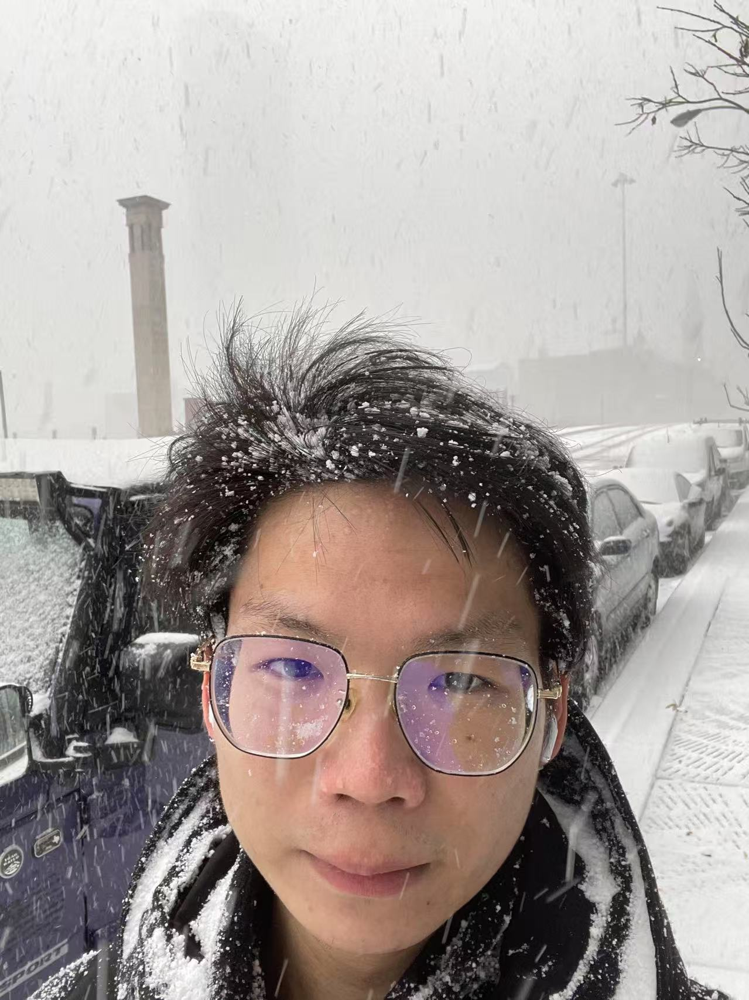
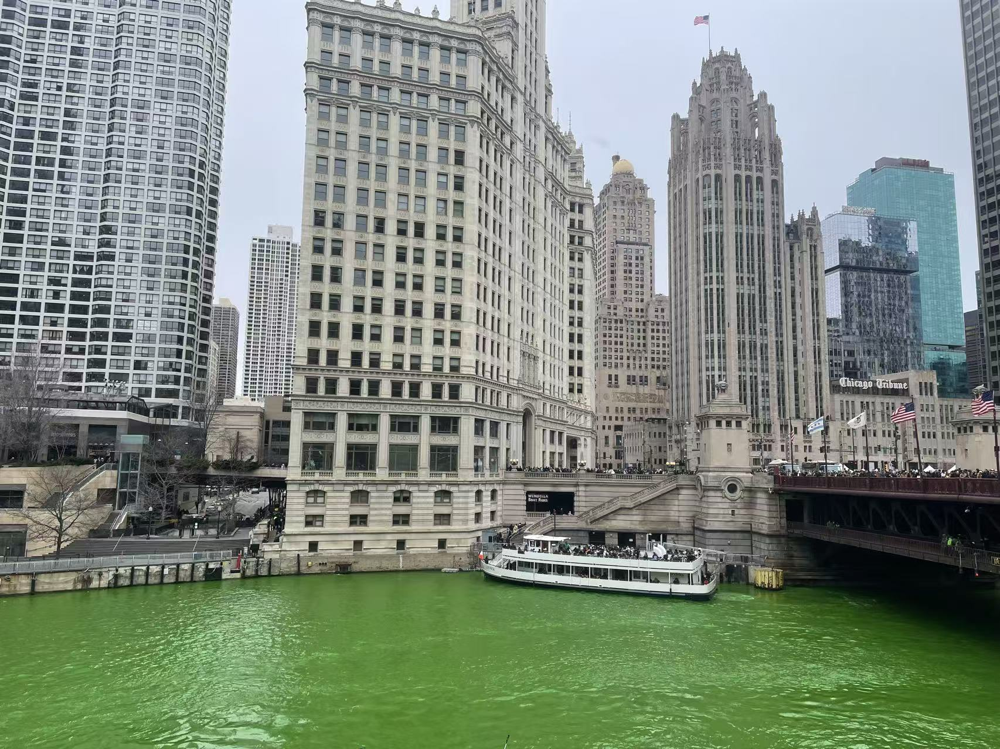

I’m interested in how large language models reason, and how we can make that reasoning more efficient, reliable, and controllable. My recent work sits around LLM cascades, faithfulness in RAG, optimization-based ML, and reproducible evaluation systems.
Beyond research, I enjoy thinking about learning, decision-making, and how people build taste, discipline, and meaningful work over time.
I come from a mathematics background and am currently pursuing a Ph.D. in Electrical and Computer Engineering. I like problems that combine theory, systems, and real empirical behavior.
Right now, I’m especially drawn to LLM reasoning: what it is, how it can be shaped at inference time, and how internal signals or structured pipelines can improve outcomes without simply scaling brute-force compute.
I don’t want this site to be only a list of papers. I care a lot about clear thinking, steady improvement, and building a life organized around meaningful problems.
Outside of research, I enjoy reading — especially the works of Isaac Asimov — playing ping pong and badminton, and spending time walking along Lake Michigan and the Chicago River.

Chicago River dyed green for St. Patrick’s Day.
More about my life →